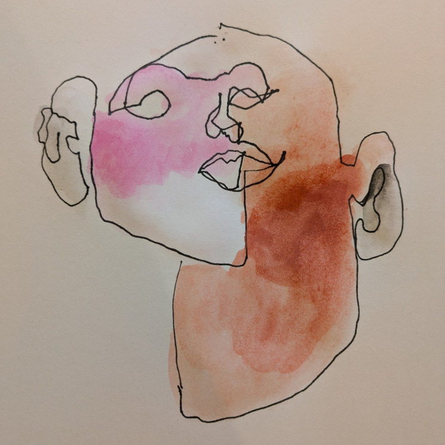

Ipa CHIU
瞿筱葳 (Hsiao-wei CHIU)

Contact
ipawei@gmail.com
ipawei@proton.me
Social
FACEBOOK | MEDIUM | SUBSTACK | MASTODON | TWITTER
#民主科技 #開源公民
#書寫記憶
About Me
Writer & Documentary Filmmaking
Co-Founder of g0v.tw community
Mother of two.
Taiwanese.
寫作。紀錄片。組織者。
臺灣零時政府 g0v 社群共同發起人。二子媽。
臺灣人。
I write stories to connect different paths. I work to strengthen open and collaborative grassroots collectives. I currently reside with my family in the San Francisco Bay Area.
投入寫作，是為了能夠讓故事串連思緒。投入社群組織工作，是相信開放的協作與草根的集體力量。目前與家人旅居美國舊金山灣區。
Projects
Building Narrative
■ Second Book: “Interview with My Father”
《訪父記：他的白髮，與我們的時代》，獲台北文學年金獎首獎。臺灣文學獎金典獎入圍。
(2025)
■ Lab Kill Lab:
https://idystopia.bitcreative.cc/
此藝術計畫預想十餘年後的時空，對數位身分的各種疑慮未消，身分數據樣態深入而安靜的影響了人生。
“IDystopia 2035” imagines our world in 2035. Despite unresolved controversies.
(2020)
■ Microwave Art Festival HK
微波國際新媒體藝術節：〈留味行〉影像裝置
(2019)
■ First Book
出版《留味行：她的流亡，是我的流浪——奶奶的十一道菜》一書。獲金鼎獎、開卷好書獎。
(2011)
■ Documentary Filmmaking
參與製作Discovery頻道《台灣人物誌：林懷民》、《台灣人物誌：黃海岱》等紀錄影片，擔任製作人。
(2004-)
Building Community
■ g0v Summit 2018
Organized g0v Summit 2018 as Director.
擔任 g0v 2018 國際雙年會總召。
■ g0v Civic Tech Grant
Started g0v Civic Tech Grant.
發起 g0v 公民科技獎助金，擔任前三屆總監。
(2016-2018)
■ g0v Jothon Group
Founded g0v-Jothon Oraganizer group.
發起 g0v 零時政府揪松團，擔任首任輪值主席。以任務小組形式繼續定期舉辦雙月黑客松。
(2014-)
■ g0v.tw community
Co-Founded g0v.tw civic tech community in Taiwan. Drafted g0v Manifesto, and organized bi-monthly hackathons.
共同發起臺灣零時政府 g0v.tw 社群，起草 g0v 社群宣言。定期主辦雙月黑客松。
(2012-)